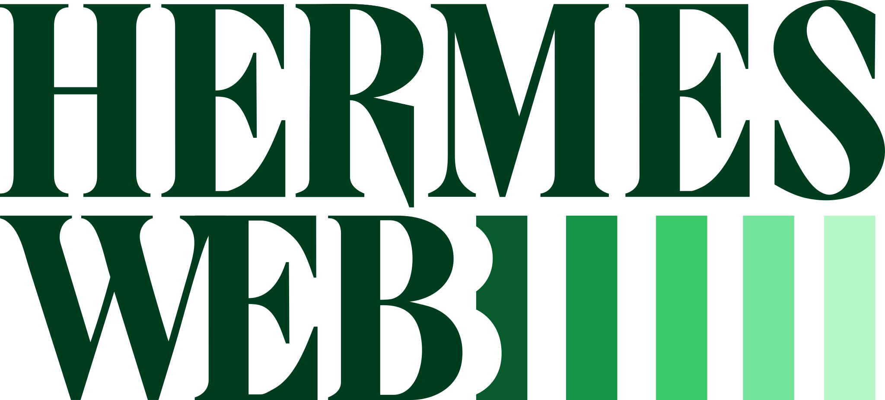

Choose model
OPENING SHARED SESSION
Loading Hermes runtime truth
Reading connection settings and canonical session history.
HERMES WEB // READY
What should we work on?
Connected to Hermes. This draft will create a new Hermes Web session when you send.
CONNECTION DETAIL